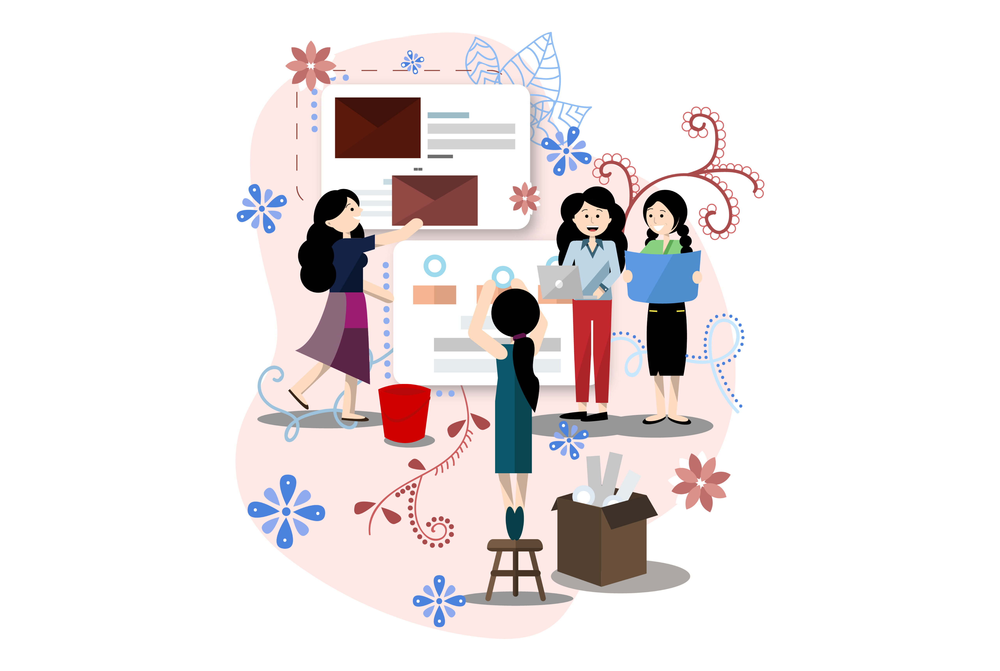
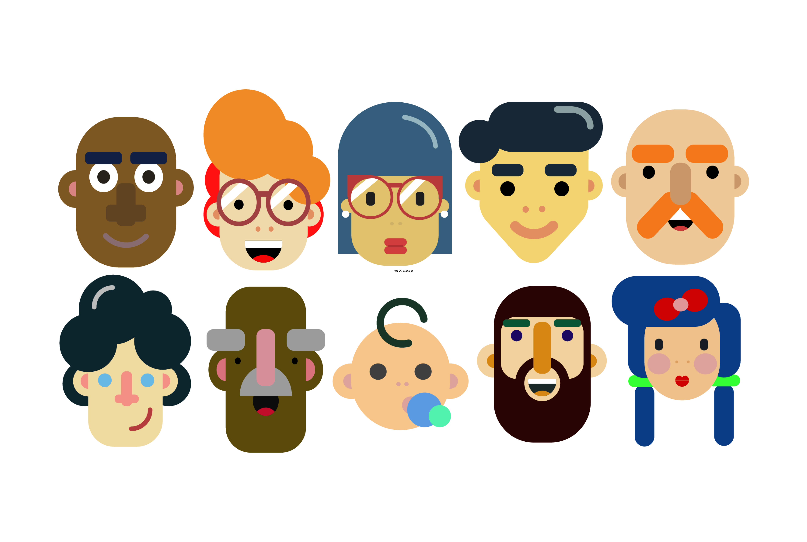
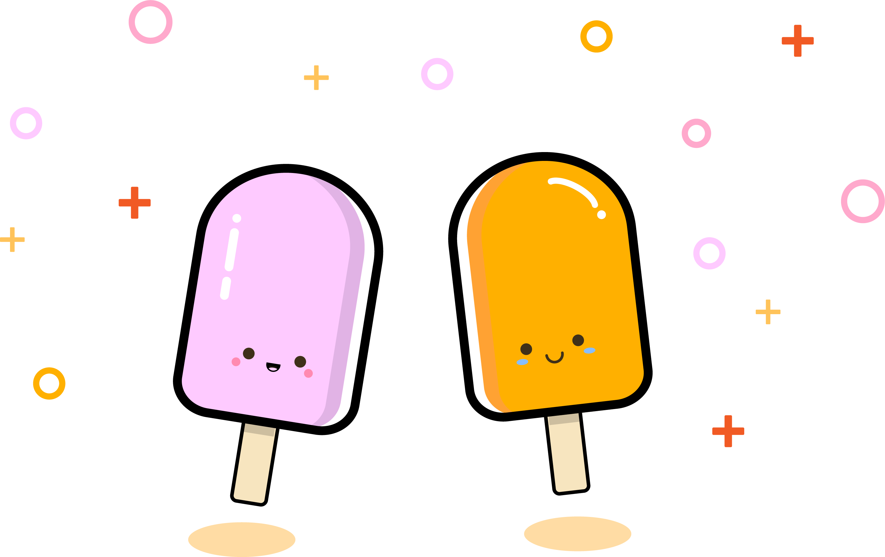
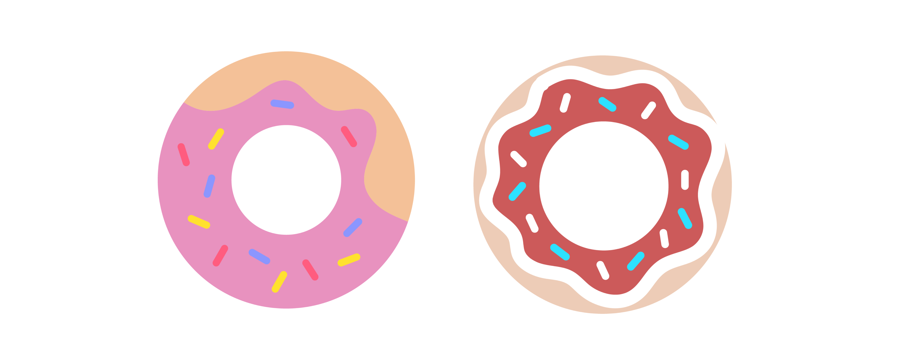
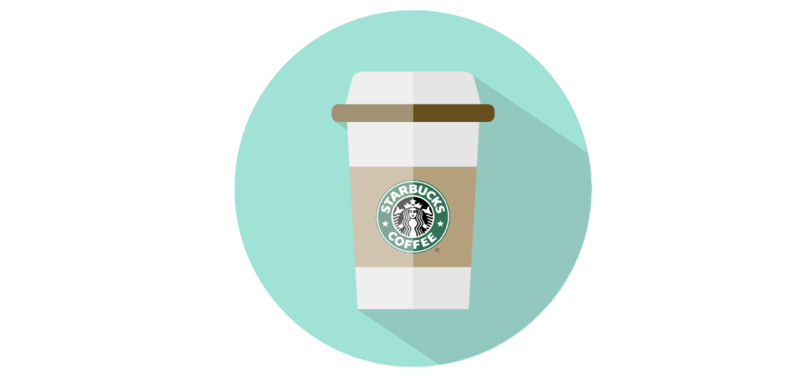

Aside from Product Design, I love making illustrations as my creative outlet to enhance my skills as a designer. I design things based on what I see in my day to day life, and take inspiration from the media, the environment around me, and other projects I've taken on..
Below are some of the purely visual, fun projects I did in my free time!

This is one of the first illustrations I created for a website I had in my first year. It's a bunch of Judys working on a website!



